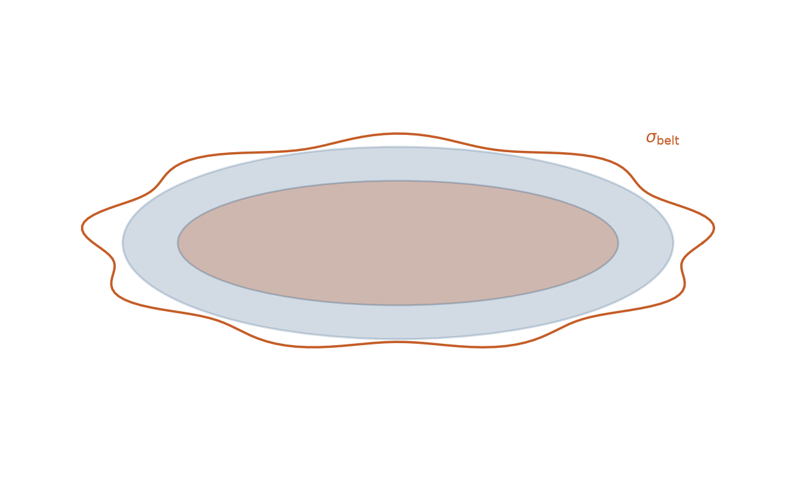
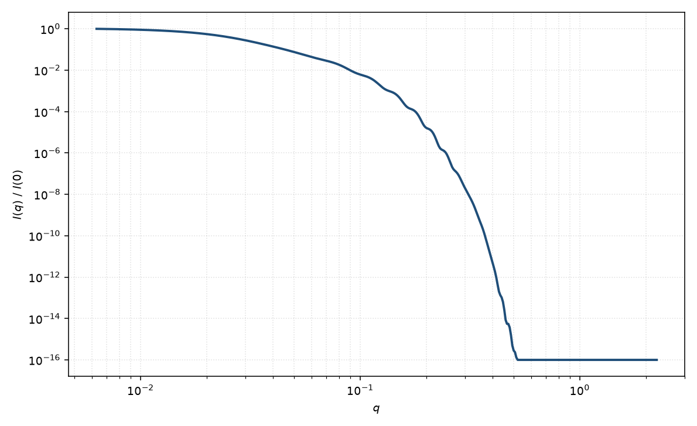

粗糙腰带椭圆双层盘
elliptical core-shell bicelle with rough belt
适用场景
在椭圆核壳 bicelle 上，边缘腰带与溶剂的界面不是锐跳变，而是有限宽度的粗糙或成分渐变。适用于去垢剂腰带溶剂化严重、边缘波动的纳米盘，以及高 $q$ 比锐界面核壳盘衰减更快、但厚度振荡仍在的数据。
若粗糙发生在上下面而不是腰带，应把模糊加在面帽，而不是本页的腰带 $\sigma_{\mathrm{belt}}$。
物理图像
锐界面腰带振幅乘以高斯界面因子 $\mathrm{e}^{-q^2\sigma_{\mathrm{belt}}^2/2}$（振幅）或强度上的 $\mathrm{e}^{-q^2\sigma_{\mathrm{belt}}^2}$，等效于边缘 SLD 的误差函数过渡。椭圆盘面平均与上一篇相同；粗糙主要阻尼径向高 $q$，对双层厚度 $\mathrm{sinc}$ 影响较弱。
$\sigma_{\mathrm{belt}}$ 与腰带厚度 $t_{\mathrm{belt}}$ 相关：过度模糊的“厚带”可用较小 $t$ 加大 $\sigma$ 近似，须用对比或独立化学计量约束。
示意图


核心公式
在椭圆核壳振幅上把腰带项乘以界面因子
$$A_{\mathrm{belt}}\to A_{\mathrm{belt}}\,\mathrm{e}^{-q^2\sigma_{\mathrm{belt}}^2/2},$$ $$P(q)\propto\bigl\langle\bigl|A_{\mathrm{core}}+A_{\mathrm{face}}+A_{\mathrm{belt}}\bigr|^2\bigr\rangle_{\alpha,\psi}.$$强度若把模糊写在 $|A|^2$ 外，须声明约定，避免与振幅形式差一倍指数。
参数表
| 参数 | 符号 | 含义 | 单位 | 典型范围 |
|---|---|---|---|---|
| 半轴 | $a$, $b$ | 椭圆盘面 | Å | 同椭圆 bicelle |
| 腰带粗糙度 | $\sigma_{\mathrm{belt}}$ | 边缘界面高斯宽度 | Å | 2–30 Å |
| 腰带厚 | $t_{\mathrm{belt}}$ | 锐界面极限下的带厚 | Å | 与 $\sigma$ 相关 |
| 各区 SLD | $\rho_k$ | 核、面、带、溶剂 | Å$^{-2}$ | 对比约束 |
| 取向角 | $\theta,\phi$ | 二维取向 | 度 | 粉末或场取向 |
拟合注意
$\sigma_{\mathrm{belt}}$、$t_{\mathrm{belt}}$ 与腰带 $\rho$ 三联简并。没有高 $q$ 与对比点时不要同时放开。半径多分散与粗糙都钝化振荡，优先用一种机制并在报告中写明。
取向与磁性同椭圆 bicelle。粗糙本身不是磁性效应；若磁死层只在边缘，磁通道的 $\sigma$ 可以与核通道不同。
相近模型
参考文献
- Guinier, A.; Fournet, G. Small-Angle Scattering of X-rays. Wiley: New York, 1955.
- Pedersen, J. S. Analysis of small-angle scattering data from colloids and polymer solutions: modeling and least-squares fitting. J. Appl. Cryst. 1997, 30, 339–354. DOI: 10.1107/S0021889897002532